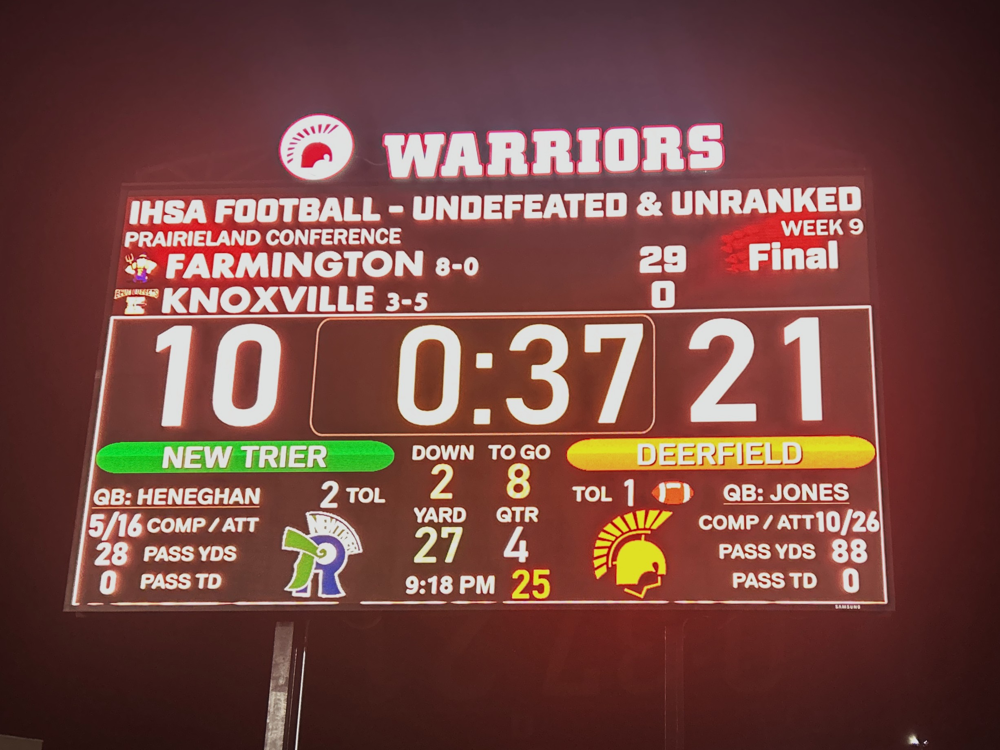
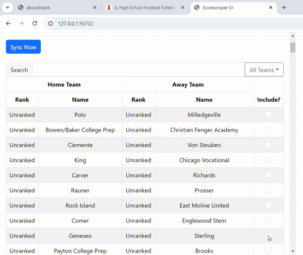

Problem
- Engineer a way to display highschool live sports scores on videoboards
- Start a buisness for a means to capitalize on a larger scale issue
My experience with starting my own company in highschool

All the data shown on this scoreboard is updated in real-time and formatted by Scorescraper.

Behind the scenes of Scorescraper.